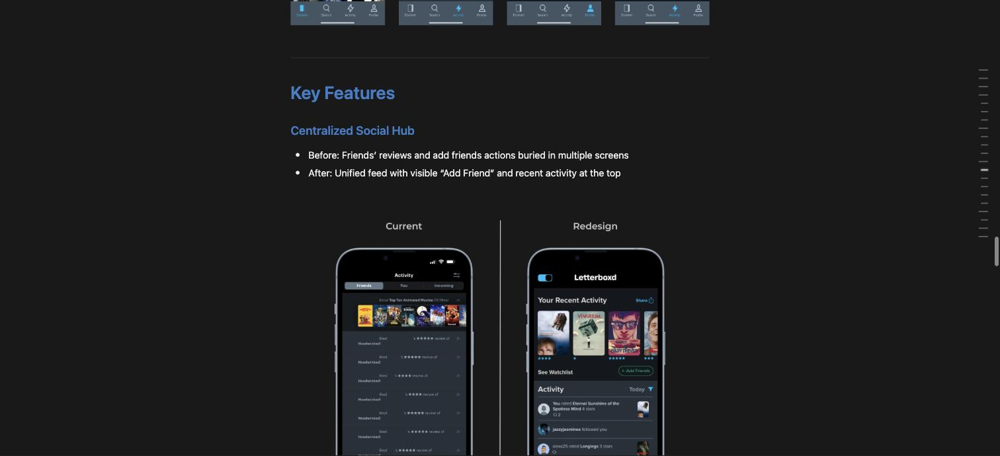
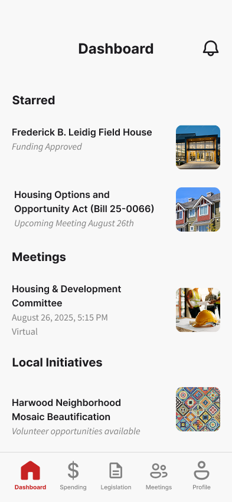

Healthcare AI · Deepest case study
Designed a clinical alert dashboard to cut hospitalist override behavior
Hospitalists override 95% of AI drug-interaction alerts because every alert looks the same regardless of severity. Two rounds of usability testing (SUS, NASA-TLX), synthesized from 18 clinical sources — including one round that found a specific, fixable gap the design hadn't solved yet.
Read the full case study →

Redesign · Secondary research
Reframing Letterboxd
Built on 50+ mined community reviews and a five-app competitive audit — centralized social, clearer navigation, and native TV tracking, without redesigning the app's minimalist, film-first identity out from under it.
Read the full case study →

Concept · Civic tech
CivicPulse
A government-transparency app grounded in real Baltimore legislation and budget data — personalized by neighborhood, sourced back to the original city record, built around the hardest constraint in civic design: earning trust without editorializing.
Read the full case study →